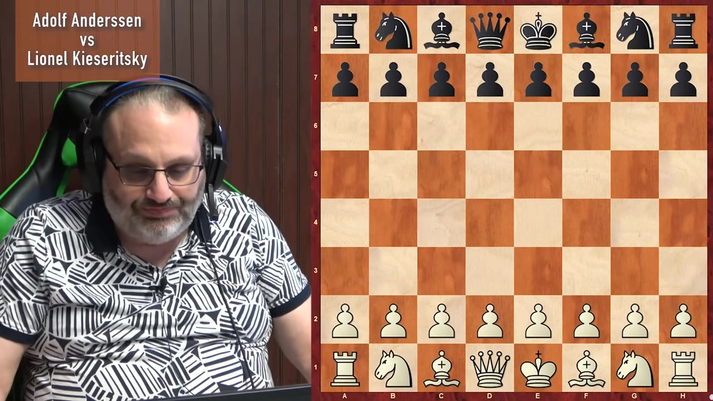
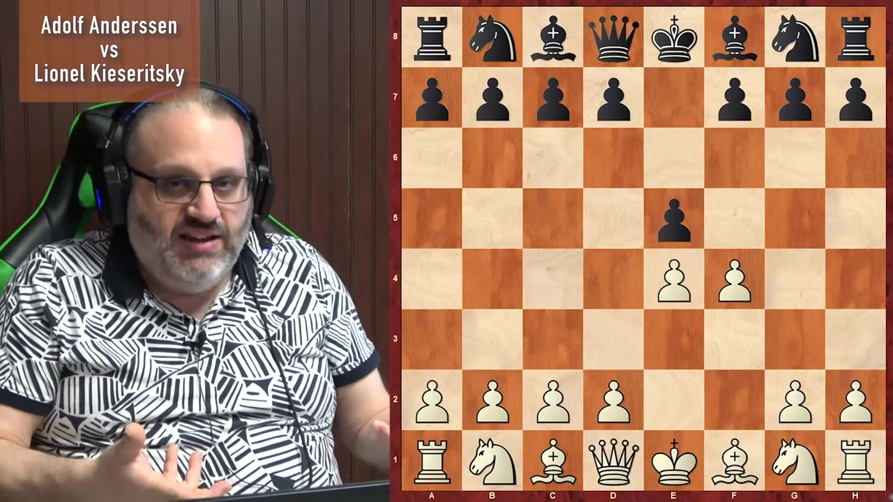
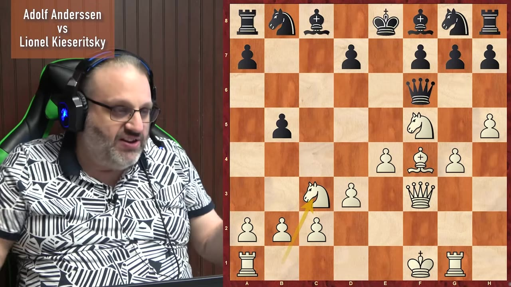
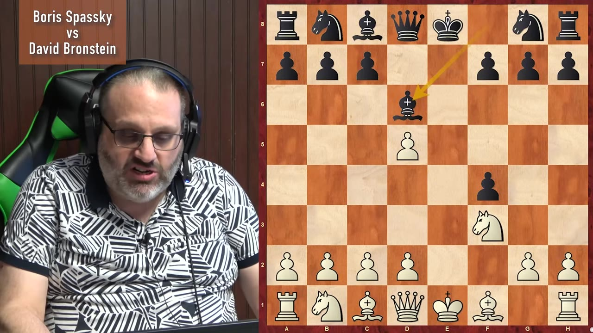
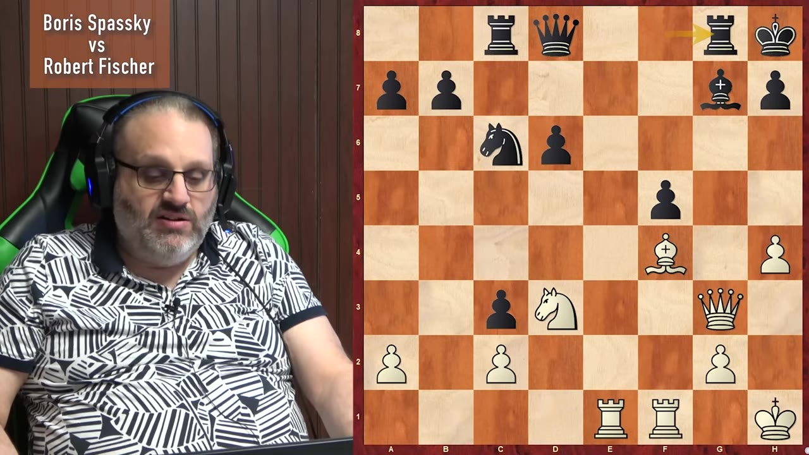
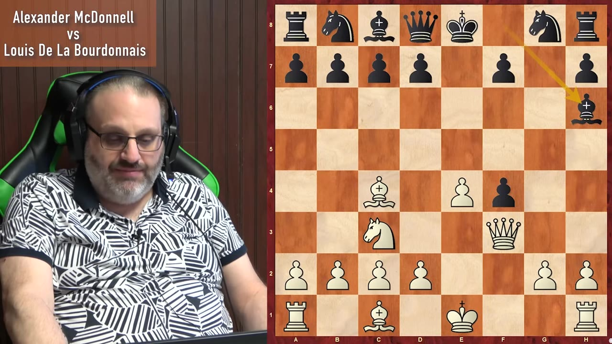
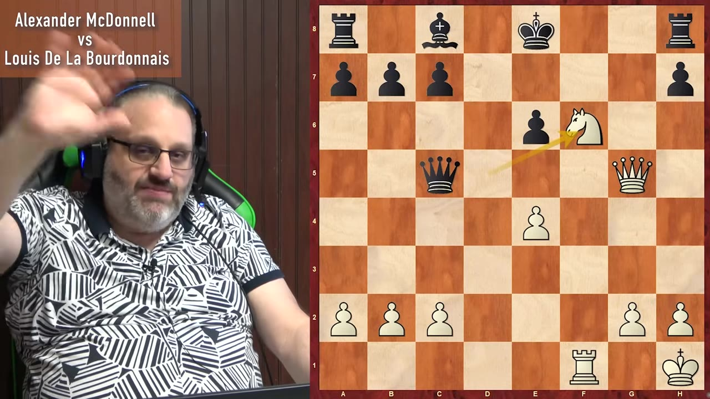

Grand Master Ben Feingold walks through the King's Gambit — the aggressive 1.e4 e5 2.f4 opening that sacrifices a pawn for rapid center control and attacking play — and explains why it's still one of the most weaponizable openings at the club level today.
Watch on YouTubeGrand Master Ben Feingold opens his Wednesday lecture series from the basement with the King's Gambit — 1.e4 e5 2.f4 — an opening that sounds like madness (you give away a pawn on move two!) but has a simple idea: trade your side pawn for your opponent's center pawn so you can play d4 and dominate the center. The comparison to the Queen's Gambit (c4) makes sense on paper, but the practical difference is stark — opponents decline the Queen's Gambit more than half the time, whereas in the King's Gambit, they almost always take. And once they do, you're already ahead.

Most chess today is online blitz — one-, three-, and five-minute games. At that level, the King's Gambit's real weapon isn't theory, it's asymmetry. If you study the King's Gambit with White, your opponent can't possibly spend as much time on it, because they rarely face it. It's the 12th most common opening — they're not concerned with it. Most club players have exactly one defense prepared, they forget it, and they're lost.

If you like winning brilliantly, you like sacrificing, you'll like the King's Gambit.— Grand Master Ben Feingold
The most famous King's Gambit game ever played. Adolf Anderssen — one of the greatest players of all time, often the link between Morphy and Steinitz — sacrificed piece after piece against Lionel Kieseritzki in a game that defied everything chess was supposed to be. Modern engines hate it. The players who created it didn't have engines; they had intuition, boldness, and a rule (en passant) that didn't even exist yet.

You're down a piece and crushing your opponent. If you don't like that, the King's Gambit is not the opening for you.— Grand Master Ben Feingold
Boris Spassky and David Bronstein played this King's Gambit at the 1959 Soviet Championship — and the opening position was featured in the James Bond film From Russia with Love, complete with a giant demonstration board and a fake villain named "Kronstein." Bronstein played the boring equalizing line (except for one thing: d5), and Spassky, playing White, turned a seemingly passive position into a brilliant attack featuring a reverse Novotny theme — a defensive idea so strange that Bronstein's queen and rook literally blocked each other from defending the king.

Truth hurts.— Grand Master Ben Feingold
Before Fischer became the greatest, he was a 17-year-old who got crushed by Spassky with the King's Gambit. Spassky — World Championship challenger who beat Kasparov and Karpov "a million times" but is remembered as "that guy who lost to Fischer" — played a classical center-control game that looked nothing like the wild King's Gambit most people expect. Fischer blundered with rook f8, missing Spassky's rook f5, and lost.

Fischer choked on his own rage.— Grand Master Ben Feingold
Before Morphy, before Steinitz, before most of chess history, McDonald and La Bourdonnais played a match series that lasted years. In game 4 of their 1834 London match, McDonald sacrificed pieces by the truckload and won. Engines say McDonald played without a single mistake — except every move was a mistake by modern standards. But in the 1800s, when sacrificing material was considered sportsmanlike, this is exactly how you played.

Feingold wraps up with his signature sign-off and a thanks to "Jesse's friend" for sponsoring the lecture. He also teases next week's topic: his former teacher, Gregory Kaidonov. A brief Q&A covers the best boring defense against the King's Gambit (Bronstein's d5 line) and transposing into the Petrosian.

:::